Frames
Commençal Supreme DH V5.2
4436 pts · 10 tracked riders
Compare 23 frames used by 64 tracked UCI World Cup downhill riders in 2026. See rider count, combined points and associated profiles. The current points leader in this category is Commençal Supreme DH V5.2.
4436 pts · 10 tracked riders

1975 pts · 8 tracked riders

1659 pts · 4 tracked riders
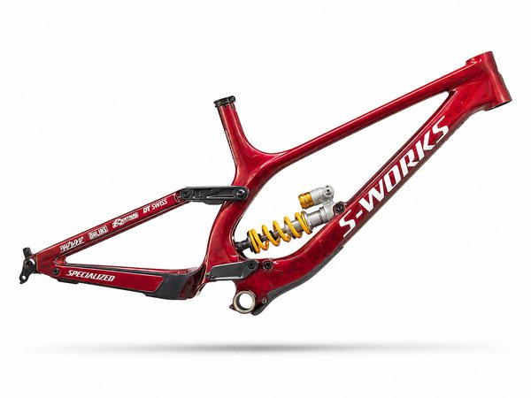
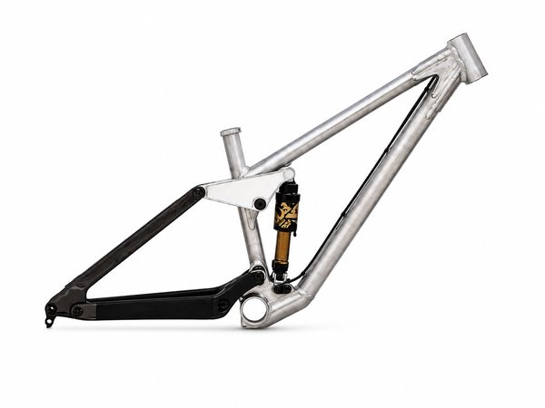
1514 pts · 4 tracked riders

1039 pts · 3 tracked riders
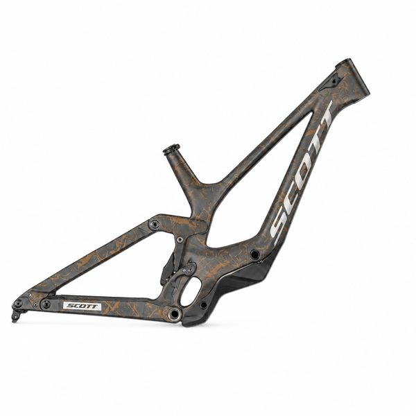
844 pts · 3 tracked riders
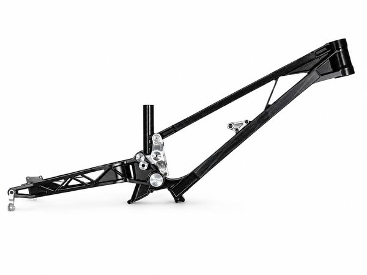
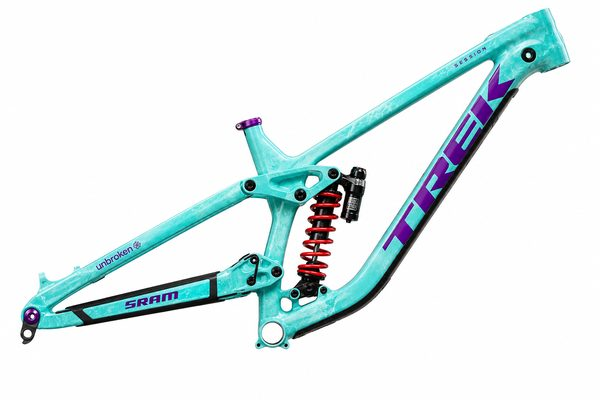
797 pts · 4 tracked riders
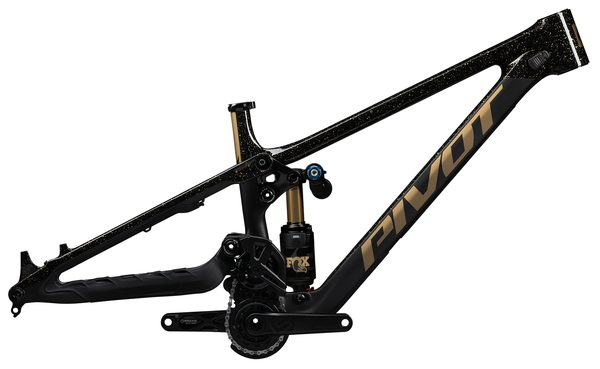
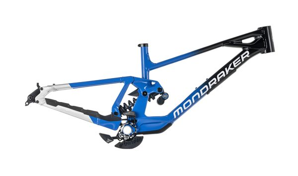


568 pts · 3 tracked riders
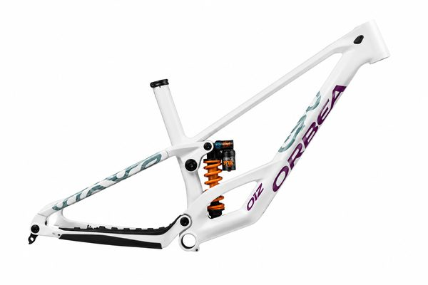

407 pts · 3 tracked riders
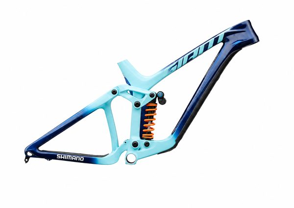
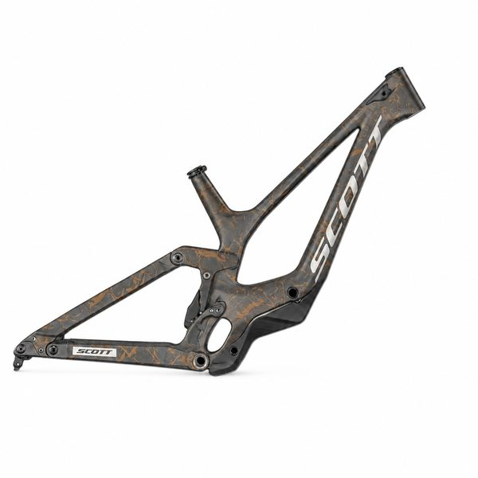
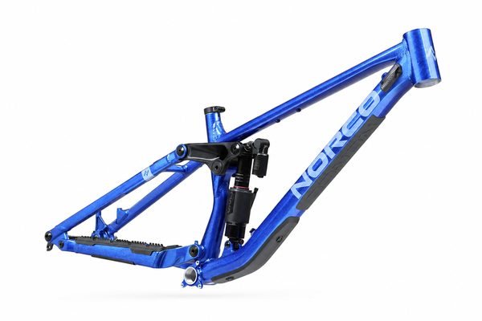
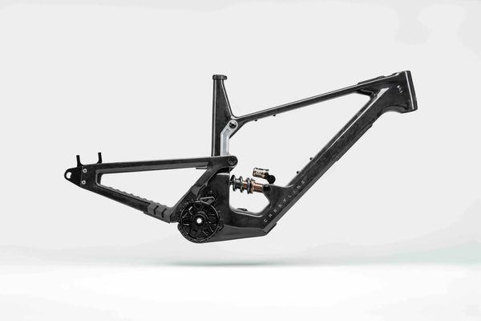
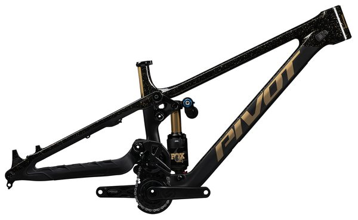

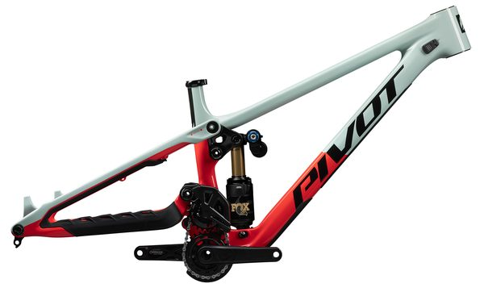
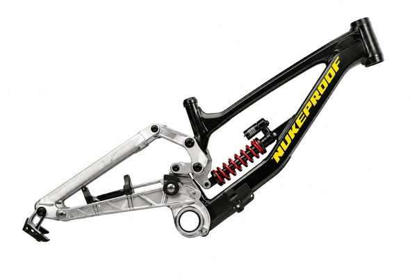
This table records competitive usage within the RidersFanatics dataset. It does not claim that the first product is universally better, and race prototypes may differ from retail specifications.